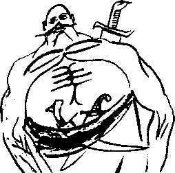

Osman Ferdi o gün eline geçen bu ilk parayla iki kilo kadar et aldı. Ağır ateşte yavaş yavaş kavurma yaparak bir şişe şarapla birlikte mideye indirdi. Daha ne kavurmalar yiyip ne şaraplar içecekti...
Osman Ferdi’nin bu ilk romanı, 1970’ler sonunun emekli payitahtında pek bir tantana ile kabul gördü. O artık acının, aşkın, tütünün, kirazın ve halkın romancısıydı...
Halkın romancısı, İhsan Kırımçak’ın zekâsına, ferasetine hayrandı: Berbat bir tarihi fanteziden, insanların zevkle okuyabileceği bir eser çıkaran o değil miydi aslında?
Beriki de Osman Ferdi’nin aslında Şeyh Osman Hulûsi Beyefendi Ağa ile özdeş olduğuna ikna olmuş, hep gözünün önünde duran bir gizli hâzineyi kendisine armağan eden bu mübarek zata derin bir saygı ile bağlanmış ve bu saygıdan dolayı, ikinci romanına asla karışmamıştı. Ama Osman Ferdi, nasıl “okuyup" yazacağını biliyordu artık. Birbiri ardına romanları patlattı. Fikirtepe taraflarından Fındıkzade’ye taşındı. Her romanı üç beş bin satıyor, oldukça büyük paralar kazanmasını sağlıyordu.
Yüzüne renk gelmiş, kelle-kulak, görene hürmet telkin eder bir vaziyet almış, kilosu, kısa boyuna rağmen kendisini iriyarı kategorisine sokmuştu. Bu dönemde yazdığı romanların başlıkları bile bu yoğun ve üretken yıllar hakkında iyi bir fikir verebilir: Karadere’nin Canları, Börülce Mahmut ile Horlak Kâmil, Canlar Ayılası Değil. Tüm bu romanlardaki ortak noktalardan biri, kahramanlarının hem sufi hem ihtilalci olmalarıydı. Olağanüstü bir şey yapmış, geleneği devrimcilikle birleştirmiş, insanlara Anadolulu atalarının da ne kadar çağdaş ve ilerici olabileceğini göstermişti! Ayrıca bilgisinin roman gibi edebi bir türün sınırları içinde kalmasına gönlü razı olmayan eş dost sayesinde bir de akademik çalışma yapmış, hemen hemen aynı kaynakları –yani kendi tahayyül gücünü– kullanmasına rağmen çok daha oturaklı sonuçlara ulaşmıştı. Nitekim, Anadolu Halk İnançlarında Şeyh, Tekke, Tarik ve Çaput adlı eseri hâlâ başvurulan bir başyapıttır.
Gelenekten sosyalizme giden yolu pek ustaca arşınlaması, yalnız yurtiçinde değil, yurtdışında da yankılar uyandırınca, Balkan ve Ortadoğu ülkelerinden peş peşe ödüller ve davetler almıştı. Buralardan edindiği hatıralar evinin bir köşesinde hâlâ durur. Trablus reis-i cumhuru Niyazi Hoxa’nın nutukları, temizlikçi kadının özellikle kış günleri ara ara vaki olan özel mülkiyete geçirme teşebbüsatına rağmen kütüphanesinin dört beş rafını kırmızı plastik ciltleri ile lale bahçesine çevirmişti. Albay Âdem Prink Koniçe’nin kendisine imzalayarak sunduğu vecizelerinden müteşekkil yirmi üç sayfalık o hikmet dolu risale ise aynı probleme, yani “her şeyin dikâlâsı ile ağababası Batı ile temastan önce de bizde vardı” sorunsalına biçim açısından daha muhtasar yaklaşmakla beraber, öz olarak aynı mesajı vermekteydi.
Yine aynı dönemde, hoyrat ellere geçip de halk aleyhine kullanılmasınlar diye, büyük fedakârlıklar yaparak kapsamlı bir emlak edinme savaşına girişti, Ördekkasap’taki iki katlı ahşap evi, çevresindeki arsayı ve diğer binaları satın alarak hiçbir zaman yayımlanmamış ilk romanı ile uyumlu bir hale getirmek işine girişmesi de aynı fedakâr zihniyetin bir sonucudur. Bir tür restorasyondu bu. Şeyh Osman’ın hayatını ve geçmişini, yıllar içinde ağır ağır yeniden oluşturmaya başladı. Şeyhin kullandığı eşyaları topluma ve bu dünyaya yeniden kazandırmak, yorucu ve zevkli bir uğraştı. Şeyhin okuduğu ve okumuş olabileceği (!) kitapları sahaflardan ve eskicilerden tek tek toplamak, hiç bitmeyen bir türkü oldu. Osman Ferdi Mürdüm, pek farkında olmaksızın kendi geçmişini ve bugününü de yeniden oluşturuyordu. Yalnız, bu işi yaparken inanılmaz seçici davranıyor, hiç zamanlama ve mantık hatası yapmıyordu. Basri’nin işe alınması için tam otuz iki mülakat yapmış, sonunda tüm sahte Basri’leri ayıklamış, kalın kollu, ifadesiz yüzlü bir Basri’yi, evin avlusunda son bir deneye tabi tuttuktan sonra işe almış, almak zorunda kalmıştı: Adam, rolünü dehşetli bir umursamazlık ile oynamış, Osman Ferdi’nin binbir emekle bedestanlardan topladığı kucak dolusu kargı ve gönder arasından birini seçerek elinde tarttıktan sonra, kaim demir levhalarla kaplı ve dış kapının yerine geçmesi an meselesi olan eski bir meşe kapıya göndermişti. Basri, demir kargının havada uçuş süresi de dahil olmak üzere, o âna dek ne yaptığını gayet iyi bilen, kim olduğu konusunda en ufak bir şüphesi bulunmayan, parmak kadar çocukluğundan itibaren tüm hayatını, kendisine makul bir maaş sağlayan mutemetlik günlerini, o meşum zimmetine para geçirme hadisesini ve gecekonduya geçişini, yazdığı romanı vesaire... kristal berraklığında hatırlayan, hatırlamaktan ziyade içinde duyan Osman Ferdi’nin tüm kimliğini, o zavallı kristali tuzla buz etmişti. Kargı kapıya değdiği an Osman Ferdi Mürdüm bu kristali bir daha toparlayamayacağını anladı. Kekeleyerek sordu:
“Basri... Basri Efendi, senin soyadın neydi?"
Kargıyı gönderen kolun sahibi, iliklerini donduran bir cevap verdi:
“Küçükbey... Benim gibi bir Basri’nin ne soy ismi olacak... Nüfus memurlarının ısrarı ile Demirdelen oldu..."
Basri’nin gönderdiği gönder, kalın demir levhalarla kaplı kalın meşe kapıyı peynir gibi delmiş, öte yandan iki karış yalman vermişti. Gözlerinin önünde bir vücud-u mücessem gibi duran kargı, şimdiye kadar kurgu olduğunu düşündüğü ilk romanının kendi özgeçmişinden başka bir şey olmadığını cümle âleme haykırmaktaydı.
O gece alt katta Basri uyuyor diye çocukluğundaki gibi tuhaf bir huzur içinde, fakat derin azaplar ve sorularla zihni lebâleb mülemma bir halde sabahı etti. Emin değildi. Hiç emin değildi. Keşke emin olaydı! Ama mantığı, zihninde uyanan birtakım hatıralara karşı korkunç bir meydan savaşı veriyor, bazen güçlü darbeler indirerek taa Sultan Berke zamanından ve hatta ondan da önce Asya-ı Vustâ asırlarından kalma kimi silik ve pembe, kimi koyu ve kızıl hatıralarını dut ağacı silkeler gibi silkeliyordu. Niye adı Osman Ferdi idi? Osman Hulûsi ile Suat Ferid’e ne olmuştu? Romanının daktilo ile, karbon kâğıdı konarak yazılmış, dolayısıyla düzeltilmemiş ve basılmamış ilk halini önüne koyuyor, orada yazıp da kendi hafızasında olmayan hiçbir şey bulamıyor, ama yazmaktan bir şekilde uzak durduğu kimi ayrıntı ve pasajları, doğal olarak, orada göremeyince iyice kuşkulara kapılıyordu. Mantığı bar bar bağırıyordu. Tabii, tabii ki kendi yazdığı nesneyi sonuna kadar hatırlayacak, fakat tabii ki zihninde olan her şeyi bir kitaba geçiremeyecekti. Böyle dangalaklık olur muydu? Kendi yalanına kendisi inanırsa bunun adı ne olurdu acaba?
Mantığı ile iki maddelik bir anlaşma yaptı: Bir, hatıra değil somut kanıtlar önemliydi. İki, madem dört yüz yıl önce yaşamı ve halen yaşamakta olan bir insan değil, mutemet eskisi ve fakat yeni ve ünlü romancı Osman Ferdi Mürdüm’dü, bunun da kanıtlarını görmek istiyordu. Mantık buna var mıydı bakalım mantık?
Sabahleyin Basri’li evde ilk kahvaltısını yaparken aradığı ilk mücessem, şimdilerde somut diyorlar, kanıtı gördüğünü düşündü. Basri bir tabak dolusu manda sütü kaymağını bal ile karıştırıp getirmişti. Tekmelenmiş gibi, tahta yer sofrasından fırladı. Çocukluğundan beri hiç ağzına koymadığı bir şeydi ama Osman Hulûsi’nin herhalde bayıldığı bir karışım olsa gerekti. Dün de bunları eve getirdiğini hatırlamıyordu.
“Basri bu ne biçim kahvaltı? Bunu nereden buldun?” diye bağırdı. “Küçükbey, haklısın ama bununla idare edeceksin. Bunların mandaları da kendileri gibi kılkuyruk bir nesil... Kaymakları da bu kadar...” diye, başka bir düzlemde cevap verdi Basri.
Osman Ferdi bu ifadesiz uşaktan bir şey çıkmayacağını anladı. Dışarı fırladı. Fındıkzade’deki eve gitti. Evet vardı! Anahtarla kapısı açılıyordu, içi boştu, tamamen boştu. Piç romanı yayınlanmazdan öncesine ait hiçbir şey yoktu... On küsur yıl oturduğu bir zavallı yeni ev. Fikirtepe’ye “seğirdim” etti, taksi dedikleri cansız kira beygiri ile. Evet, orası da duruyordu. İçine giremedi, başka insanlar oturuyordu. Hep gittiği kahveye gitti. Aradan geçen on küsur yıldan, alınan kırk küsur kilodan, bırakılan beyaz sakaldan dolayı kimsenin kendisini tanımadığını fark etti. Kahveciyle yaptığı kısa bir konuşmada, hemen herkesin o evde bir zamanlar oturan bir Hortumcu Osman’ı tanıdığını, bu zatın mutemetlik yaparken şirketin tüm çalışanlarının maaşı olan on iki milyon lirayı zimmetine geçirdiğini, bu yüzden yıllarca hapis yattığını, son zamanlarda da iyice sefil bir halde sokaklarda bağıra çağıra “ben meşhur romancı Osman Ferdi... Kafamı kızdırmayın, hepinizi romanımda oynatırım... Tavsiri Efendi’ye söylerim, hepinizi böcük yaparım, yüreğinize şitahlar sokarım" diye bağrındığını öğrendi. İçtiği acı kahve için yüklü bir bahşiş bıraktı. Son kez ve gülerek sordu, peki bu gariban sonunda romancı olmuş muydu? Kahveci bön bön bakıp,
“Beyim, hortumcu olan o naneyi de yemiştir. Neblim?” dedi, “Günahı boynuna, ama devlet diye bir şey var memlekette. Olduysa cezasını da görmüştür..."
Sigara dumanı, karbonatlı çay, kalmış ter ve ayak kokan bu kalabalığa “roman nedir bileniniz var mı?" diye bağıramayacağına göre “sağ ol" deyip ayrılmaktan başka çaresi yoktu. Kaldı ki müdavimlerin kahveciden daha malumatlı olmaları ihtimali de pek yoktu. Romancı Osman Ferdi değil de futbolcu Büyük Osman olsaydı, kırk kilo değil iki ton da alsa herkesin kendisini sevinç çığlıkları ile karşılayacağını bilmenin ezikliği ve yenilmişliğiyle, gövdesini gecenin serin, ucuz kömür isi kokan ama kahveye göre pek temiz havasına attı. Yürümeye başladı. Evet, çok çok iyi hatırladığını zannettiği hatıralar bu gecekondu mahallesinin ötesine geçmiyordu. O eve nereden gelmişti sorusunun cevabı dehşetli bir boşluktu. Hiçbir şey hatırlamıyordu:
“Aslında hatırlıyordum... Her şeyi biliyordum... Ama Basri o anılarımı kırdı, paramparça etti...”
Hem çok şey öğrenmiş hem hiçbir şey öğrenememişti. Bir zamanlar burada Osman Ferdi diye bir dolandırıcının yaşadığını öğrenmiş, bu zatın son zamanlarda iyice kötülediği, aklını kaçırdığı bilgisini almış, onun sonraları romancı olduğundan ahalinin bihaber olduğunu anlamıştı. Kırılan anıları arasında daha evveliyatına, hatta ana babasına dair hiçbir kırıntı olmadığını üzüntüyle idrak etti. Sorsalar, İvaz ve Mahmure demekten başka çaresi yoktu. Dahası, bu Osman Ferdi’nin daha o zamanlar, Tavsiri diye bir karakterden söz ettiğini kahveciden öğrenerek dehşet içinde kalmıştı. Bunları düşünerek yürüye yürüye Hasanpaşa taraflarına doğru ilerlerken biriyle çarpıştı.
“Ooo, Hulûsi Bey yine kimliklerini aramaya çıkmışlar... kolay gele... kolay gele... Bu arada son seyahat için teşekkür edemedimdi, sağ ol.”
Adam bunları diyerek, loş sokakta pırıl pırıl parlayan kedi gözleriyle uzaklaştı gitti. Bu hepsinden öğretici olmuştu!
“Hami, seni iblisin tohumu!” diye, bir şeyhe pek yakışmayacak şekilde adamın arkasından bağırdı. Evet kendisi Şeyh Osman Hulûsi’ydi, buna ikna olmuştu. Yine de cevaplanacak çok soru vardı. O gece “dolandıncı mutemet” imgelemi üzerine pek çok düşündü. Bu kadar çok şeyi unutup da bu mutemetlik faslını hatırlamasının da bir anlamı olabilir miydi? Kim itimat etmişti de onu mutemet yapmıştı? O kimin güvenini boşa çıkarmıştı? Çalıştığı şirketin adı neydi? Yoksa Şeyh Osman Hulûsi, hayatına dair eldeki tek kayıt haline gelen romanında Tasviri konusunda yalan mı söylemişti? Bu romanı Tasviri’den okuyup yazmışsa, bu dediğine ve babasının adı dahil, diğer dediklerine nasıl güvenilebilirdi? Kahveci ancak onun bu düşmüş halini mi hatırlıyordu? Sonra “tekrar” toparlanması da Tasviri’nin yüzünü asla kara çıkarmayacak yeni yalan dolanlarla olmamış mıydı?
Uzun süredir uğramadığı yayınevine gitti, iki sokak ötede daha büyük bir ofise taşınmışlardı. Çalışanların sayısı üç dört kat artmış, Leman Kırımçak hanım editör olmuş, İhsan Bey mali işlere bakmaya başlamıştı.
“Âlâ... âlâ... Hepsi senin sayende Öküz Osman! Güç’ü reddet... gel bu sefil şehirde biraz kavurma yiyip şarap içme uğruna namusunu iki paralık et..."
Şeyh Osman’lığı hafif içselleştirmiş olarak, söylene söylene Leman’ın yanına girdi.
Lenslerle, simsiyah gözlerini laciverdimsi yapmış, kış olmasına rağmen, ortalığı ısıya boğan kalorifer sayesinde incecik bir polyester bluz içinde, göğüslerinin uçlarına varıncaya kadar hatları belli olan Leman, asla fena halde filan değildi.
Osman Ferdi kısaca derdini anlattı, kendi hayatını anlatan otobiyografik bir şey yazmak istiyordu. İlk romanıyla ilgili, elde ne varsa görmek istiyordu. Tabii tabii, onu da Sürüm Yayınlarından basacaktı...
Yeni proje ile heyecanlanan Leman, birtakım dosyaları karıştırdı. Hemen hepsi, roman yayınlandıktan sonra basılan yazıların kupürleriydi. Yalnız ve yalnız Sürüm Yayınları’na ilk kez başvururken doldurduğu “yazar bilgi ve müracaat formu" vardı. Formu kadının elinden yırtar gibi aldı. Kendini devlet daireleri modeli üzerine bina eden her kurumun sorduğu rutin soruları ve cevaplarını yutarcasına okudu.
Yazarın adı: Osman Hulûsi Gördüm
Müstear adı: Osman Ferdi Mürdüm
Doğum yeri: İstanbul
Doğum tarihi: 1570
Baba adı: İvaz
Ana adı: Mahmure
Ananın kızlık soyadı: Kızlık soyadı ne demek?
Soyadı ne demek?
Canikligil?
Sonra adres vesaire ve referans olarak Hami Güvercin ile Mehlika Karga diye iki şahsiyetin ismi vardı. Ahh... Bazen kimse göründüğü gibi değildi. Gerisi bu romanı kim alır, kim okur, tanıtım için kime gönderelim gibi, 1970’Ier sonu Türk yayıncılık hayatında sorulması usulden olan sorulardı.
“Leman Hanım, insan hiç 1570 yılında doğar mı? Bakın dalga geçmişim, hiç farkında olmamışsınız!”
Leman’ın tepkisini almak istiyordu. “Aman canım, nebilim ben? O zaman herhalde on yedi yaşında bir kızdık, değil mi? Doğar doğar, bana ne? Ayrıca ‘ayol yalan söylüyor, dediğinden bir on yaş daha yaşlıdır bu garanti’ diye düşünmüştüm... Çok değişiktiniz beyefendi... Şimdi daha gençsiniz vallahi..."
Buradan da hiçbir şey çıkmamıştı. Bu kâğıt parçasındaki veriler bağımsız bir kaynaktan gelmiyordu, kendi titrek elyazısıyla yazılmıştı. Leman’a dediği gibi dalga geçmiş de olabilirdi.
Ya da fena halde hastaydı ve roman diye hezeyanlarını yazmış, kendisi de pekâlâ inanmaya başlamıştı... İhsan Bey’in yanına kafası karmakarışık girdi.
“Ooo Sayın Gördüm... Muhterem Şeyhim, hangi rüzgâr attı sizi buraya?”
İhsan Bey, şeyhini dinlemeksizin heyecan içinde yeni bir projeden bahsetmeye başladı. Proje basitti: İlk romanını piç olmamış haliyle basacaklardı. Nasıl? Zamanında o kadar çok değiştirilmiş ve üzerinde o kadar oynanmıştı ki, şimdi bir iki ufak dokunuşla, mesela isimleri değiştirerek rahat rahat basabilirlerdi. Zaten bu romanın zamanı asıl şimdi gelmişti! Memlekette neo-Osmanlı yönelimler yayılıyor, bit pazarına nur yağıyordu. Okuma yazma bilen hemen herkes, ya Osmanlı zamanında geçen bir roman yazmakla meşguldü veya bir şeylerin koleksiyoncusu olmuştu. Hatta kadıncağızın biri, farklı gibi görünen bu iki uğraşı birleştirmiş, mühür yapımını konu edinen ve XVI. yüzyıl Gelibolu’sunda geçen Mühürledim Zamanı Gümüş Dairelerle adlı tam 789 sayfalık nefis bir aşk ve cinayet romanı yazmıştı. Şakire Meddücezir Hanım, memleketin en büyük mühür koleksiyoncusuydu. Birkaç kıskanç eleştirmen ve eleştirwomen, bu nefis romanın çatısının zayıf kurulduğunu, içindeki bilgilerin de No neham &r Freakes adlı yabancı mezat evi kataloglarından kaldırma olduğunu iddia etmişse de, kitap büyük sükse yapmıştı. En komiği de şuydu ki roman İngilizceye kazandırıldığında aynı bilgiler tekrar bu dilde asla boy göstermemiş, Türkçenin esnekliği çevirmenin becerisiyle birleşince, Anglosakson dünyası yepyeni bir “Dogu’dan esintiler” kitabı kazanmıştı. İhsan Kırımçak bunu pek beşûş bir suratla anlattı, “bu Frenkler de pek saftirik oluyorlar canım" pozunda.
Peki ya Suat Ferid denen haytanın yazdığı, bol bulamaç yoğurtlu, güya Selanik’te geçen romanı okumuş muydu Şeyh?
“Hayır ama kendi romanımda ben bu epizodu anlattım. Bu doğrudan bir aparmacılık vaziyeti...”
“Ooo Sayın Kırımçak”ın şaşkınlıktan çenesi düştü:
“Yani... ne... yani bunu siz yazmadınız mı bir başka takma ad altında?”
Hayır, yazmamıştı. İhsan Bey ise Osman Ferdi Mürdüm’un rakip yayınevi olan Kargamış tarafından angaje edildiğini zannetmişti. Kendinden biraz utandı.
Osman Ferdi’nin asıl sıkıntısı, kimliği konusunda bağımsız veri bulmaktı. Suat Ferid denen yaratığın gerçek kimliği ve yazdığı roman üzerinde durmadı bile. Romanını okuyan herhangi biri bunu akıl edebilirdi. Usturuplu bir şekilde lafı veri bulmaya getirdi: Yaşamın Düşsel Tuğlaları diye bir roman yazıyordu. Kim olduğunu bilmeyen biri ne yapardı İstanbul’da? Acaba Sayın Kırımçak’ın keskin zekâsı birkaç fikir yumurtlayabilir miydi?
Kırımçak “muhayyel” kahramanın eskiye ve yeniye, resmiye ve gayri resmiye, ilime ve okülte aynı anda başvurmasını önerdi. Neo-Osmanlıcılık da fena bir ideoloji değildi yani. Artık zamanıydı. Osman’ın son romanı Ve Orak ile Biçildim, ancak birkaç yüz kopya satılmıştı, o da ne hikmetse, Taştanpaşa cezaevi yakınındaki Kitapçı Devrim’de... İhsan Bey böyle bir amnezyaya uğrayan kişinin, kayıtlı olduğu nüfus dairesine, meşhur tasavvuf tarihçisi Murat Kerteriz’e ve ünlü medyum, dil-göz bağlayıcı ve falcı Kuddusı’ye gitmesi gerektiğini söyledi.
Eh, hiç yoktan iyiydi.
Basri’nin ısrarlı soruşturmaları sonucu Ördekkasap’ın Fatih nüfus dairesine bağlı olduğu, Prof. Dr. Murat Kerteriz’in Emirgân’da, Kuddusi’nin ise Çıksalın taraflarında yaşadığı tebellür etmişti.
Osman Ferdi, önce nüfus dairesine gitti. Bu iş pek kısa sürdü. Yok, yok efendim, o nüfus-hüviyet cüzdanı dediklerinden kendisinde yoktu! Olsa hiç buraya gelir miydi? O zaman o nesne zaten kendisine kim olduğunu söyler, dava da biterdi. Yardımsever memur kızlar bakıştılar:
“Muhtarlıktan nüfus cüzdanı değiştirmek için bir form al, öyle gel beyamca...”
Osman Ferdi’nin direnmesi ve cüzdan istemediğini söylemesi üzerine kütüğe bakmaya karar verdiler. “Gördüm” soyadı altında dört aile vardı. Hiçbirinde Osman Hulûsi diye biri yoktu. Osman Ferdi ile Suat Ferid’i sordu, “kardeşlerim” diye. Onlar da yoktu. Meyus, mahzun, çıktı. Aslında soyadından da pek emin değildi. Bunu hiç söylemedi bile.
Eskiden beri tarihçileri sevmez, iyi niyetlileri küçümser, kötü niyetlilerinden nefret ederdi. Nereden diline dolanmışsa hepsine bir cins isim bile bulmuştu: “Biçare Efendiler” diyordu...
İhsan Bey’in bir tarihçi dostu aracılığıyla Murat Kerteriz ile Emirgân’daki evinde görüştüler. Emirgân’ın yoksulca evlerinden birinde oturan Murat Kerteriz, evi ve elbiseleri gibi demode bir adamdı. İlahiyat fakültesindeki işinden emekliye ayrılalı en azından yirmi yıl geçmişti, günlerden de pazardı ama yine de, misafiri gelecek diye, ip gibi olmuş siyah bir kravat takmış, tıraş olmuştu. Yanağındaki küçük kesiğin üzerini üçgen biçimli bir kâğıt mendil parçasıyla kapamış, sonra onu öylece unutmuş, dalgın bir adamdı. Bir zamanlar edindiği Jessy Perkins kesimi bıyıkları, kırlaşmışsa da, hâlâ kırk yıl önceki noktada ikamet ediyordu.
Murat Kerteriz de romancılardan pek hazzetmiyordu. Özellikle uzun emekler neticesi ve mahsulü olan Tevârih-i Turuk adlı kitabının hacimlice pasaj ve noktalarının bugün kendisini ziyarete gelen zat başta olmak üzere, romancılarca “kaldırılmasından" pek muztaribti. Dahası da vardı: Bu intihalcilerden birkaçı gazetelerde, şurada burada, gerçek tarihin kendi yazdıklarından öğrenilebileceğini söylemiş, hatta bunların biri iyice ileri gidip, gençliğin tarih okumasının yasaklanması gerektiğinden dem vurmuştu. Buna pek gerek de yoktu aslında: Kerteriz’in zavallı kitabı sadece 322 nüsha satmış, bu satışların yüzde 60’ı filan da millet Osman Ferdi’nin romanını okuduktan sonra gerçekleşmişti...
Osman Ferdi’nin kibar tavrına rağmen lafı pek dolaştırmadılar. İnce belli bardaklarda, kalmış çay içerken, Osman Ferdi babayani ve yukardan bakan bir sesle,
“Muhterem müverrih, Osman Hulûsi Beyefendi Ağa hakkında ne bilirsiniz?” diye, tepeden inerek sordu.
Beriki ise, her muhteşem tarih zekâsı gibi kalûbelâdan başlayarak konuşmaya koyuldu, sabırla dinleyen Osman Ferdi’nin canına okuduktan sonra, zındıklık ve şeytanet ile suçlanan Osman Hulûsi’nin, ağır işkenceler altında tutularak nasıl aklından edildiğini ve sonunda Ayasofya minarelerinden birinden aşağı atılarak telef edildiğini anlattı. Çünkü keramet davasında olan Osman Hulûsi buradan düşünce ölmeyeceğini iddia ediyormuş...
Her şeyi işkembe-i kübradan sallayan romancının kendisine kaynak sormasına biraz alınmış gibi yaparak sakin bir ses tonuyla,
“Hwace Refahûddin Efendi’nin Zill-i Tasvir adlı eserinde mesturdur” diye ekledi.
Osman Ferdi bir tarihçi intikamına uğradığının farkında olmayarak, kafası karışık bir halde Emirgân’dan ayrıldı. Duvduvani Efendi’nin kitabına da gayet lüzumsuz bir şekilde, ortasında ince belli bardak filigranı olan bir sahife daha eklendi. Hep romancılar tarih okumaz ya!
Osman Ferdi ertesi gün, bilici-bakıcı-bağlayıcı Kuddusi’yi ziyarete gitti. Kuddusi tek katlı küçük bir evde yaşayan, tuhaf bakışlı, hatta epeyce şaşı bir insandı. Evin salon olarak kullandığı büyücek odasındaki bir duvarda, ziyaretine gelen yerli-yabancı ünlülerin, devlet başkanlarının fotoğrafları vardı. Bu zevatın memlekete gelip Kuddusi’yi ziyaret etmelerini bizim medyamız tamamıyla atlamış olsa gerekti.
Hemen karşıdaki duvarda ise bugün yarın gelmeleri iktiza eden zevatın resimleri asılıydı. Osman Ferdi kendi fotoğrafını bu potansiyel müşterilerin en başında gördü...
Kuddusi, önünde saygı ile eğilerek sordu:
“Osman Bey hoş geldiniz, bağlanacak göz mü var, dil mi var? Yoksa muradınız mıdır istikbale bir nazar?”
“Eh, pek değil, maziden haber verseniz daha makbule geçer...”
Kuddusi buna pek hazır değildi. Geçmişe yönelik fal bakmıyordu pek. Daha önce birkaç kez kayıp gerdanlık, yüzük vesaire aramış, akl-ı selim eseri cümleler sarfetmiş, arananlardan bazıları da –tesadüf eseri olsa gerek– bulununca epey bir ünlenmişti. Yine de, böyle geçmişe ait tahminler yapmak istemiyordu. Her an, her dakika değişen bir şey için kendisini taahhüt altına sokmak, henüz vaki olmadığı için gayet sağlam olan geleceğe ait tahminlere hiç benzemiyordu. Cidden kolaydı geleceğe ait tahmin yürütmek: “Göz var üzerinizde”, “aleyhinize konuşan dilleri bağlamak gerek” veya “aman aman hastalık vaki üç vakte kadar” gibi yavan tahminler hemen hep tutuyordu. Vakit kazanmak için “üzerinizde dil-göz var, önce onların bağlanması gerek” diyerek bildiğini okumaya başladı:
“Ve cemf’ bedenlerin ve bana kasd edenlerin yoz gözlerin ve yoz dillerin ve cemf’ damarların bağladım, mühürledim ve cemf’ has ve âmmın ve ulu beğlerin hışmın bağladım ve zalimlerin ve naiblerin ve kadıların dilin bağladım yedi kat yerde ve yedi kat gökte ne kadar ferişteler var anların hürmetiçün bağladım ve mühürledim yüz yirmi dört bin peygamberler yüzü suyu hürmeti için bağladım ve mühürledim... ve çıyan ve kuş ve yılan ve akreb dilin bağladım ve sekiz uçmak ve yedi tamu hakkıçün bağladım...”
Dua, harf, peygamber, ferişte, ot yiyen hayvanat gibi yüzleri suyu hürmetine bağlanacak iki ve daha çok ayaklı pek bir haşerat kalmadığında Kuddusi durdu ve soluklandı. Kaçacak, sığınacak bir delik kalmamıştı.
Osman Ferdi hakkında bir şeyler biliyordu. Bütün ünlüler hakkında bir şeyler biliyordu. Çekine çekine, soluklana soluklana anlatmaya başladı. Kuddusi yaradana sığınmış sallıyordu fakat o konuştukça Osman Ferdi’nin ilgisi artıyordu. Son on küsur senesinden gayrısını hatırlamadığı hayatı hakkında kendi romanından başka bir kaynak daha vardı demek ki... Bu halet-i ruhiye bakıcıya da sirayet etti. Kuddusi bir noktada, söylediği her şeyin geçmişte bir yerlerde bir şeyleri değiştirdiğini, o değişenin de bugünü değiştirdiğini zannetti. Öylesine güçlü bir duygu, öylesine güçlü bir yanılsamaydı bu... Bu hissi yenmeye karar verdi. Serbest çağrışım halinde değil de bilinçli, aşikâr yalanlar söylemeye çalıştı. Bu yalanlar da aynı hissi veriyordu. Abartarak işin içine kendisini de kattı. Anasından babasından bahsetti. Büyük dede ve ninesini İvaz Paşa’nın komşuları yaptı, Osman Ferdi’nin romanından en iyi hatırladığı “gönder gönderme” sahnesine yerleştirdi. Bu hikâyede büyük büyük epeyce büyükninesi ve o sırada çok güzel bir kız olan Ayşebula, Osman’ın anasının başına sirkeli bezler koyuyor, büyük büyük ve daha pek çok büyükbabası Şaşı Zühtü Ağa ise, Basri bir demir kargı atarken Osman ile kargı arasına girmek gafletini gösteriyordu. Bu kuyruklu yalanı söylerken, hayali büyükbabasının göğüs kafesine çatırtılarla giren bir kargı düşünüp ürpermemezlik edemedi. Bitirdiğinde, Osman Ferdi’nin, yüzüne tebessümle baktığını ve hafifçe şaşırdığını gördü. Bu ifadenin nedenini misafiri gittikten saatler sonra fark etti: Şaşı gözleri tamamen düzelmişti. Sadece gözleri değil, bedeni de atlet bedeni gibi bir şey olmuştu. Ayşebula’nın vefasızlığına ve gelecekten geçmişe doğru planlanan bu talihsiz değişikliğe önce pek yandıysa da –çünkü artık bilici-bağlayıcı-bakıcı-görücü olarak kariyeri sona ermişti– sonraki mankenlik günlerinde Şeyh Osman’ın en inançlı taraftarlarından biri olmak istedi. Şeyhin müridi olmaması engelini aşamadı ve hayatının sonuna kadar tek bir kelime yalan söylememeye yemin etti.
Osman Ferdi ise kimliğini ve geçmişini aramanın ne kadar boş olduğunu anladığından, bu uğraşı bırakıp Ördekkasap’ta kendi dünyasına çekilme erdemini gösterdi. Üzerine bir rahatlık, bir ağırbaşlılık gelmişti. Elde iyi kötü bir geçmişi vardı işte. Çoğunda böyle bir şey de yokken insanlar pekâlâ yaşayıp gidiyorlardı. Geriye kalan azınlık da aynen kendisi gibi yazıyor ha yazıyor, “herc ü merc edilen edvârda" yetmeyen, o kitabı yeniden ve sil baştan yoğurup duruyordu. Osman Ferdi kalan ömründe bir daha roman filan yazmaya kalkmadı. İlk göz ağrısı olan romanı hayata geçirmek ve yaşamak uğraşının çok ve çok başlarındaydı henüz. Tüketemeyeceği kadar geçmiş veya değişik geçmişler üretip de ne yapacaktı? Bunları kimlere yamayacaktı? Varolanı yavaş yavaş tüketmeye, ısıtıp ısıtıp yemeye karar kıldı.